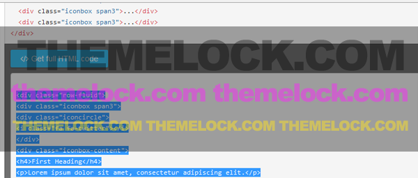
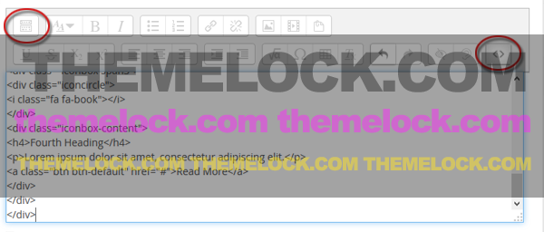
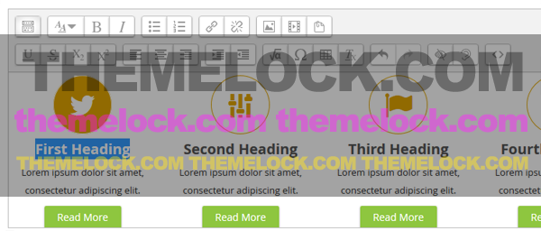
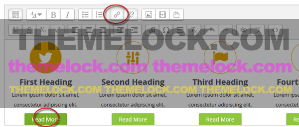

Adding content
Example: Adding icon boxes
The demo site of Theme Lambda contains a row of four icon boxes below the slider. They have a smooth hover effect and they can also contain buttons and links, for example to refer to another page with a "Read more" link.
-
First step: Copying the HTML
At first, we have to copy the HTML code lines for the icon boxes from the "Styling your Site" section in this documentation. So go to "Styling your site" > "Content Boxes" or just click here.
In most cases, the HTML code you find directly below the example is shortened to make it easier to read and comprehend. If you click on the "Get full HTML" button below you will get all HTML code lines of the given example. Copy them to the clipboard.

-
Second step: Adding a label to the Frontpage
Now go back to the Frontpage ("Home").
To add an activity or resource to a course or to the frontpage you alway have to turn editing on by clicking the button top right or the link in "Administration" > "Course administration". Then, click "Add an activity or resource" to open the new activity chooser. Here, select "label" and then click the "Add" button, or simply double-click on the resource name.
First, you have to switch the edtor to HTML/code view (see also: https://docs.moodle.org/27/en/Text_editor#Atto_HTML_editor).

Here, insert the HTML from step one and close the HTML/code view. In the preview of the editor you should now see the icon boxes.
-
Third step: Editing the icon boxes
Editing the text: This is the easiest part! You can change the text directly in the editor.

If you don't see a correct preview of the icon boxes in the editor, your are either working with a Moodle version prior to 2.7 or you have the TinyMCE editor as your default editor. In both cases, I recommend switching to the Atto editor. Atto is a javascript text editor built specifically for Moodle and it is the default text editor in Moodle from 2.7 onwards.
To download Atto text editor for Moodle 2.5 or Moodle 2.6: https://moodle.org/plugins/view.php?plugin=editor_atto
To change the default editor for Moodle 2.7 to current go to "Administration" > "Site administration" > "Plugins" > "Text editors" > "Manage editors". The order of priority may also be specified here.
Editing the buttons and links: You can place the cursor directly into the button to change the button's description. If the cursor is within the button, you can also click on the "link" icon of the editor to change the reference of the hyperlink. Also, deleting the button's description will remove the entire button.

Editing the icons: To do this, you have to to switch the edtor to HTML/code view again. The icons are embedded via the Font Awesome icon font. Font Awesome is designed to be used with inline elements like
<i class="..."></i>In the example, you will find in line 4 the following code:
<i class="fa fa-twitter"></i>This is the icon for the "Twitter bird". So to change the icon, you will have to change this line.
Now go to the Font Awesome icons list: http://fortawesome.github.io/Font-Awesome/icons/.
Here, you can choose your desired icon.
Click on the desired icon and the code line for this icon will show up. In the Moodle editor, you can now replace line 4 (the code for the "Twitter bird" icon) with the code for the new icon.
For a more detailed example on how to add a Font Awesome icon please read the section "Styling your site" > "Using Font Awesome" in this documentation.